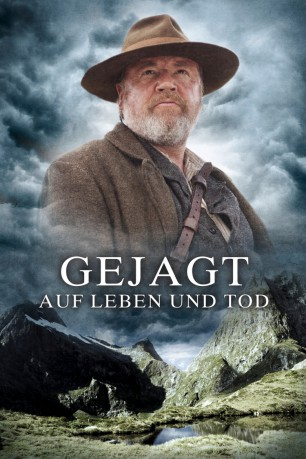

#3005 Gejagt - Auf Leben und Tod
 
 IMDB-Wertung: 6.5 / 10
IMDB-Wertung: 6.5 / 10  Metascore: 0
Metascore: 0 
Ein Maori wird beschuldigt hinterrücks einen britischen Soldaten ermordet zu haben und flieht in die Wildnis Neuseelands. Doch die Briten haben ein Ass im Ärmel: Einen legendären Fährtensucher, dem noch nie eine Beute entgangen ist. Doch je mehr Einzelheiten Arjan von diesem Fall erfährt, desto sicherer ist er: Kereama wird zu Unrecht beschuldigt. Beide Männer beginnen ein packende Jagd durch den neuseeländischen Dschungel. Die Frage ist: Wird am Ende die Wahrheit triumphieren und beide ihren Frieden finden oder wird einer von ihnen von der grünen Hölle Neuseelands verschluckt und nicht wieder freigegegeben?
Jahr: 2010
Dauer: 102 Minuten
FSK: 12
Land: Neuseeland Studio: Square One EntertainmentTonspuren: DTS - ,
Untertitel: Deutsch,
Auflösung: 1080p (1920x800) Größe: 9523 MB
Genre: Action, Drama, Abenteuer, Western
Regisseur: Ian Sharp
Drehbuch: Nicolas van Pallandt
Soundtrack: David Burns
Darsteller:
 Ray Winstone als Arjan van Diemen
Ray Winstone als Arjan van Diemen Temuera Morrison als Kereama
Temuera Morrison als Kereama- Gareth Reeves als Maj. Pritchard Carlysle
 Mark Mitchinson als Saunders
Mark Mitchinson als Saunders- Daniel Musgrove als Pvt. Rennick
- Andy Anderson als Bryce
- Mick Rose als Sgt. Leyborne
- Jodie Hillock als Lucy
- Tim McLachlan als Levin
 Stephen Ure als Recruitment Clerk
Stephen Ure als Recruitment Clerk- Stephen Papps als Police Officer
- Steve Reinsfield als Drake
- Greg Johnson als Customs Official , uncredited
Datei: X:\HD-Western-2000-2015\Gejagt - Auf Leben und Tod (2010, FSK12, 1920x800).mkv seit 16.01.2016
Festplatte: HD Eastern+Western
 Es gibt insgesamt 61 Filme in der Gruppe 'HD-Western-2000-2015'
Es gibt insgesamt 61 Filme in der Gruppe 'HD-Western-2000-2015'